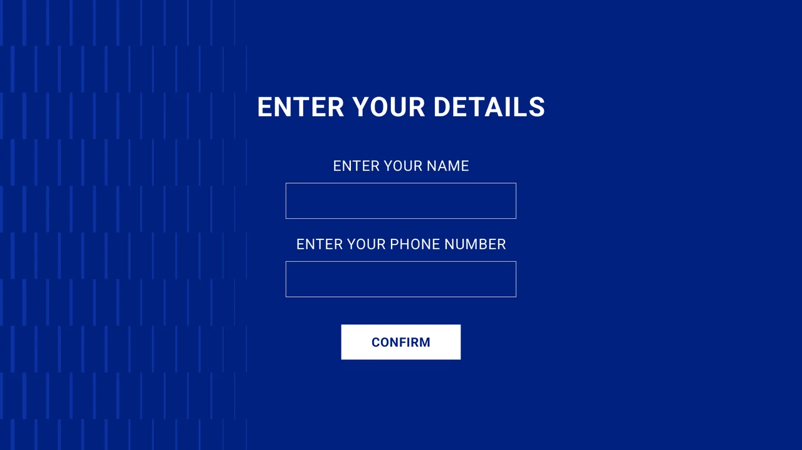
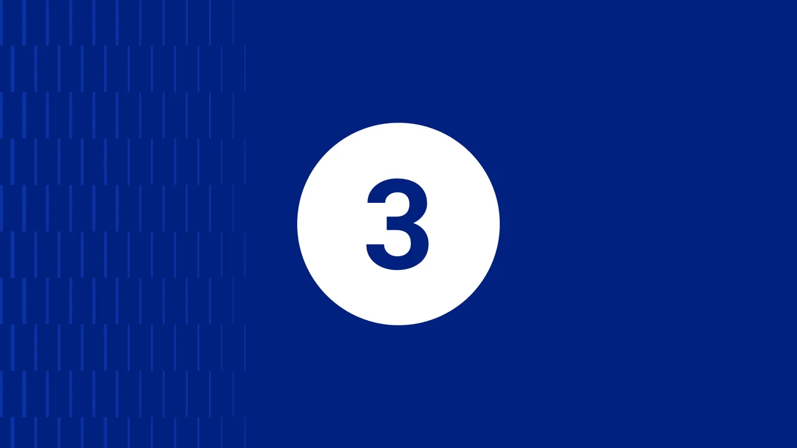
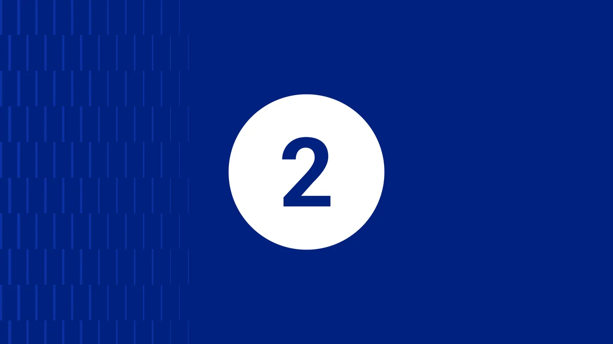
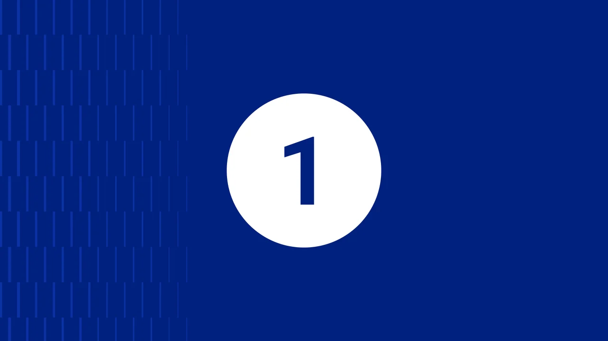
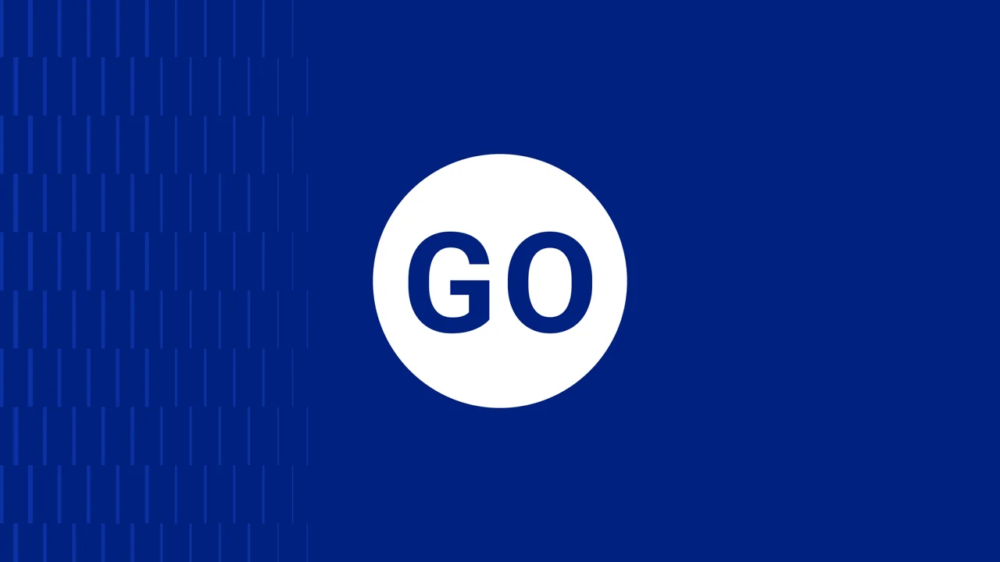
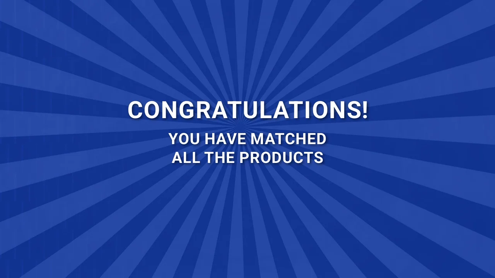
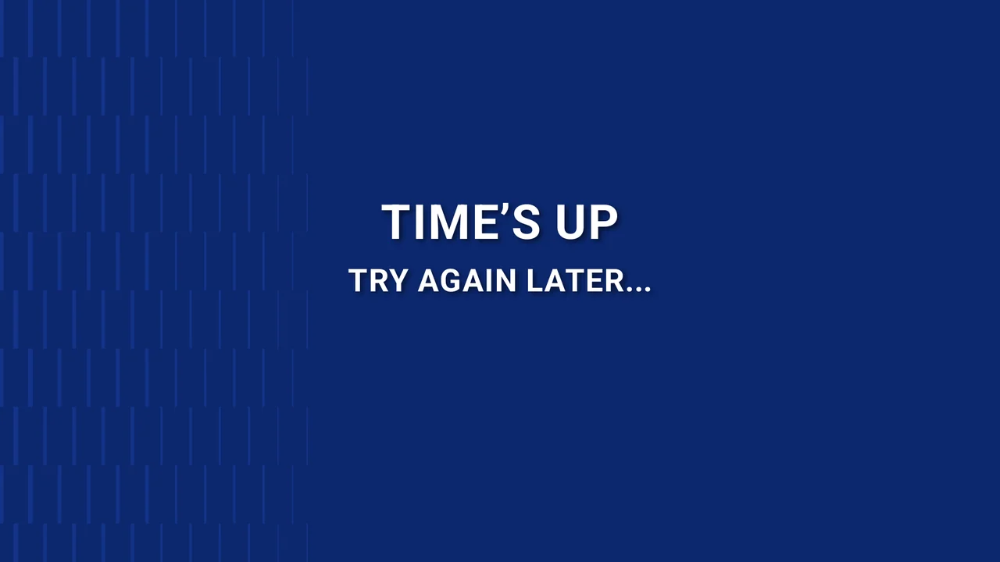

Invite & register
The start screen offers a direct invitation. A separate blank registration layout prepares the participant before the game begins.
A simple game, considered as an entire visitor journey.
Explore the story
Bring the visitor from an invitation to play into a timed matching challenge, with clear transitions before and after the round.
The project combines game-interface artwork with a dual-screen flow and a physical display concept. These artboards show the invitation, blank registration, countdown and end-of-round messaging. Together they reveal how the experience establishes a starting point, builds anticipation and closes the interaction.
A restrained blue interface gives each state one clear purpose. Oversized typography and a staged countdown keep the screen readable at a distance, while registration and completion states frame the short game session.
The start screen offers a direct invitation. A separate blank registration layout prepares the participant before the game begins.
Three, two, one and go are treated as distinct screen states. The visual focus stays on a single large signal.
Completion and timeout compositions provide different endings while remaining part of the same visual system.
Explore the complete compositions and interface states. Select any image for a closer look.
08 / PROJECT IMAGES
Select a view to explore.
A single touch prompt opens the experience.
A blank name and phone-number form prepares the player before the round.

The first beat of the opening countdown.

The second beat holds the same simple visual focus.

The final countdown cue before the game begins.

The launch cue marks the transition into the matching round.

Completion artwork celebrates matching every product pair.

A separate ending gives a clear retry message when the timer runs out.

Structure, interaction and visual decisions that give the work its character.
RoleConfirm interface design, motion, code, integration and stand geometry separately.
AssetsBrand/product imagery, hardware geometry, collaborators and any AI assistance require attribution.
StatusAudited concept and implementation evidence; runtime and delivery status unverified.